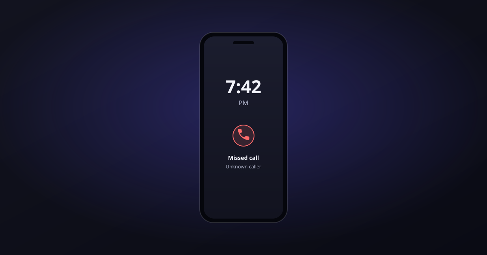

Last Tuesday evening, somebody’s water heater let go.
They stood in a wet garage, pulled out their phone, and searched “emergency plumber near me.” Your business came up. They tapped the number.
It rang four times. Then: “Thanks for calling — we’re closed right now, but leave a message and we’ll get back to you.”
They hung up before the beep. Then they tapped the next result.
You never knew that call happened. There’s no missed-call notification for the customer who found you, considered you, and quietly gave their money to somebody else. It just doesn’t show up anywhere — not in your voicemail, not in your CRM, not in your revenue.
That’s the thing about missed calls. They’re the only business expense that never appears on a statement.
The math nobody wants to do
Let’s actually run it, because the number is usually worse than the guess.
Start here: a standard 9-to-5, Monday-through-Friday schedule covers 40 of the 168 hours in a week. That’s 24% of the time. Which means 76% of the week, your phone is essentially unstaffed — nights, early mornings, weekends, holidays, and the entire span of time when a homeowner is home to notice the problem in the first place.
And that’s exactly when people call. Estimates vary a lot by industry and by whose study you read — anywhere from a third to two-thirds of home service calls land outside business hours — but nobody credible puts it low. Emergencies don’t check your hours. Neither do the people who finally have a free minute at 8pm to book that appointment they’ve been meaning to schedule.
Now the second number. When your phone goes to voicemail, most callers don’t leave one. Industry estimates cluster somewhere between 75% and 90% abandonment, and the rate goes up for the calls you most want: urgent problems, first-time callers, price shoppers. The more valuable the call, the less likely they wait for the beep.
So put those two together:
- Three quarters of the week, you’re not answering.
- When you don’t answer, most people don’t leave a message.
- They call the next business on the list — the one that picks up.
You’re not losing calls. You’re losing customers, one at a time, invisibly, in a way that never generates a single piece of evidence that it happened.
“But I call everyone back first thing in the morning”
Sure. And that’s more than a lot of businesses do.
But there’s a well-documented study out of Harvard Business Review — researchers audited 2,241 U.S. companies and tracked what happened to inbound leads. Companies that made contact within an hour were nearly seven times more likely to qualify the lead than companies that waited even 60 minutes longer. The average first-response time across all those companies? Forty-two hours.
Nine hours is not one hour. By 8am, the water heater is already replaced. The tooth is already looked at. The person who called your law office at 9pm about a car accident has already spoken to two other attorneys.
Speed isn’t a nice-to-have in a phone-driven business. It’s most of the sale.
Why the usual fixes don’t fix it
You’ve probably already considered the options, and probably already found the catch in each one.
Forward calls to your cell. Now you’re on call 24/7. You answer at dinner, at your kid’s game, at 11pm on a Saturday — until you don’t, and then you’re back to voicemail, except now the caller heard your voicemail instead of the business one. It works right up until you have a life.
Hire a receptionist. A good one is real money — salary, taxes, benefits, training — and they still only cover 40 hours. The 76% problem is untouched. You’ve now paid a lot to fix the part that was already working.
Traditional answering service. Better, but most of them take a message and pass it along. That’s a slightly faster voicemail. The caller still doesn’t get an appointment, an answer, or a resolution. They get a promise that someone will call back.
Just... accept it. Most owners land here by default. Not because they decided to, but because the other three options all had a catch and the problem is invisible enough to ignore.
What actually changed
AI phone agents got good. Not “press 1 for sales” good — conversational good.
After Hours CallBot answers in under a second, every time, at any hour. But answering isn’t the interesting part. Here’s what it actually does on the call:
- Books the appointment while the caller is still on the line — straight into Google Calendar, Calendly, or whatever you already use. Not a callback request. An actual confirmed slot.
- Asks qualifying questions so you know whether that 2am call is a $2,000 emergency or someone asking if you service their zip code.
- Texts you a summary the moment the call ends — who called, what they needed, what got scheduled. Full transcript in the dashboard if you want the details.
- Routes the genuine emergencies to you and confidently handles everything else, so your phone only buzzes when it should.
It learns your business from your website and your own description of what you do — your services, your pricing questions, your tone, your FAQs. There are 50+ natural voices, and you can clone your own if you want callers to hear something familiar.
Want to hear it before you believe it? Call (805) 263-1808 and talk to Aria yourself. Ask her something difficult. Most people are about thirty seconds in before they stop testing and start just... having a conversation.
Run your own numbers — conservatively
Here’s the version where we assume you’re skeptical.
Say you only miss 5 calls a week after hours. Not 20. Five. Say only 25% of those would have turned into work — a pessimistic close rate for someone who called you first. And say your average job is $300, which is on the low end for most trades.
That’s about 22 missed calls a month → roughly 5 new jobs → $1,625 in monthly revenue you currently aren’t capturing.
The Pro plan, with the TD Creatives discount, runs $269/month.
Net: about $1,356 a month. Roughly $16,000 a year. From the pessimistic version of the math.
Now go back and use your real numbers — your actual ticket value, your actual missed-call volume. Most owners run it once, get a number they don’t believe, and run it again. It’s the same number the second time.
One captured job usually pays for the month. Everything after that is just revenue you were already leaving on the table.
“My customers will hate talking to a robot”
Fair objection. Here’s the honest reframe:
Your customers are not choosing between a warm human and an AI. At 9pm on a Sunday, they’re choosing between an AI that books them an appointment and a voicemail greeting.
Nobody has ever preferred the voicemail.
The part where you don’t have to do anything
Here’s what we’d rather you didn’t do: sign up, poke at settings for an hour, configure it 60% right, and decide it doesn’t work.
TD Creatives sets it up for you. We train Aria on your services, your tone, your actual FAQs, your booking rules. We test it. We adjust it. And you keep the same phone number your customers already have — nothing on their end changes except that somebody finally picks up.
You also get one point of contact: the same team that already knows your business. Not a support ticket queue.
We spend a lot of time building websites and running SEO that make the phone ring more. Watching those hard-won calls die in voicemail at 8pm is, frankly, the most frustrating thing we see. This closes the loop.
Two ways to start
Try it yourself. Claim the 10% TD Creatives discount and start the 14-day free trial — no credit card, live in about ten minutes. If you like configuring your own tools, you’ll be fine.
Or let us handle it. Tell us about your business and we’ll have it live and trained — usually within a day — with your discount applied and nothing for you to figure out.
Either way, do it before Tuesday.
Because your phone is going to ring at 7:42 PM again. It always does.
Ready to get your project started?
Tell us about your business and we’ll come back with a quick plan and a price.